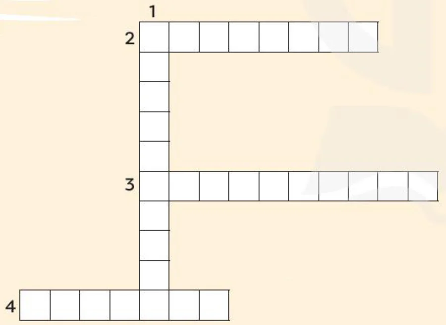
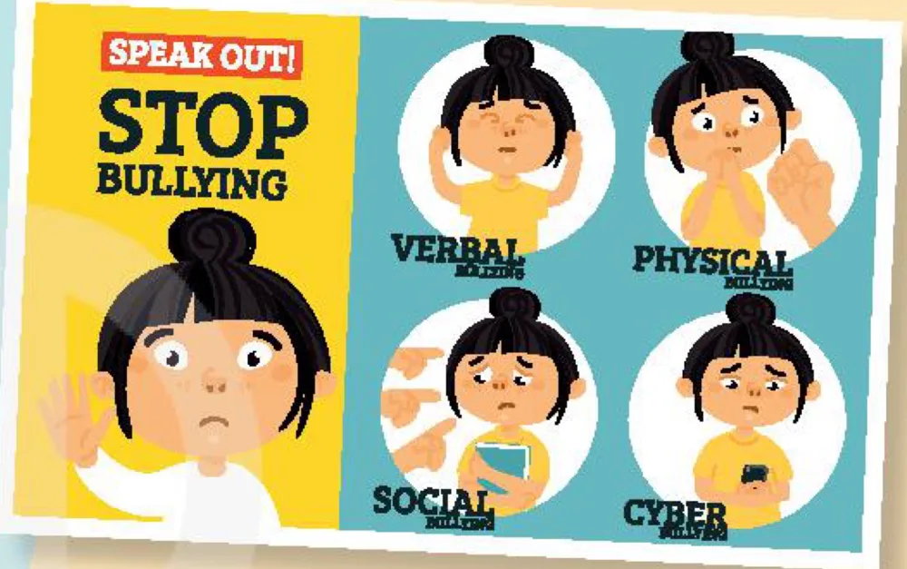

Looking back & Project
Lesson 8 — A social awareness campaign
9Four stops in 45 minutes
- 🎵
Warm-up
How does your voice move?
5 min - 🔁
Looking back
Sounds · words · grammar
12 min - 📣
Project
A social awareness campaign
25 min - ✅
Wrap-up
Now I can…
3 min
Warm-up
How does your voice move?
5 minutesHow does your voice move?
1. Have you ever seen cyberbullying? Yes/No question → rising ↗
2. Do you worry about peer pressure, bullying or body shaming? choice question → peer pressure ↗, bullying ↗, body shaming ↘
💡 Yes/No ↗ · choices before ‘or’ ↗ · the last choice ↘
Looking back
Pronunciation · vocabulary · grammar
12 minutesMark the intonation (1–2)
1. Should we report bullying to teachers or speak to our parents first? teachers ↗ or … parents first ↘
2. Is this social awareness campaign about poverty or crime? poverty ↗ or crime ↘
Mark the intonation (3–4)
3. Have you ever experienced any physical, verbal, or social bullying? physical ↗, verbal ↗, or social bullying ↘
4. Do you worry about peer pressure, body shaming, or bullying? peer pressure ↗, body shaming ↗, or bullying ↘
Crossword

Across and down
ACROSS 2. The local police are running an awareness ________ to reduce crime in the area. campaign
ACROSS 3. Teens who are regularly bullied suffer from ________. depression
ACROSS 4. ________ video games can lead to feelings of anger and hate. violent
DOWN 1. Building self-________ is important for preventing and dealing with bullying. confidence
Linking words
1. We started a campaign against bullying in our school. However / In addition, we organised classes for teens to try new things and become more confident. In addition
2. Sharing someone’s personal information online is illegal. Therefore / Moreover, you should be very careful about what you post online. Therefore
3. Because / Because of our health campaign was successful, more teenagers now eat healthy food and exercise regularly. Because
4. Although / In spite of all our efforts, we were not able to solve the problem. In spite of
Project
A social awareness campaign
25 minutesA social awareness campaign

Your class is starting a campaign to raise people’s awareness about different social issues in your community. Each group is responsible for planning activities for one social issue.
- bullying
- cyberbullying
- peer pressure
- body shaming
- teen stress
Cues for your presentation
❓ What is the social issue? How does it affect the community?
👥 Who will participate in your campaign? Who can help to fix this issue?
📅 What activities do you plan to include in your campaign? What are their goals?
🗣️ Our campaign is called … · This issue affects … because … · We plan to organise … in order to … · We hope this campaign will …
A good presentation…
- ✅ explains the social issue clearly
- 🛠️ practical and safe activities
- 👥 everyone speaks
- 🔤 Unit 9 words + linking words
- 📣 a clear call to action
🏆 Vote: the campaign you would most like to join
Unit 9 self-check
- intonation in choice questions
- words about social issues
- linking words and phrases
- read about peer pressure
- talk about peer pressure
- listen about types of bullying
- write a proposal against cyberbullying
- express disappointment and sympathy
- social problems facing US teens
- present an awareness campaign
Homework
1. Do the Looking back exercises in the workbook.
2. Improve your campaign plan with your classmates’ feedback.
3. Get ready for Unit 10 — The ecosystem.